<!doctype html>
<html lang="en">
      <!DOCTYPE html>
<html>
<body style="background-color:#FFE783;">
</body>
</html>
  <head>
    <meta charset="utf-8">
    <title>Home</title>
  </head>
  <body>
    <a href="index.html">Home</a>
    <a href="portfolio.html">Portfolio</a>
     <a href="aboutme.html">About Me</a>
  </body>
</html>
<h1>About me!</h1>
<p1>My name is and I am an RBHS student</p1>
<p></p>
<p2>This is my family. My brother's name is Bryant and he goes to Duke University! </p2>
<p></p>
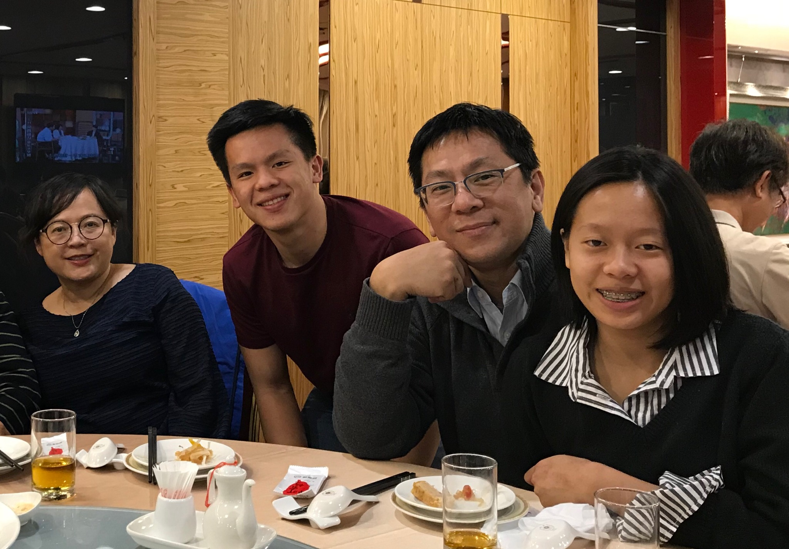             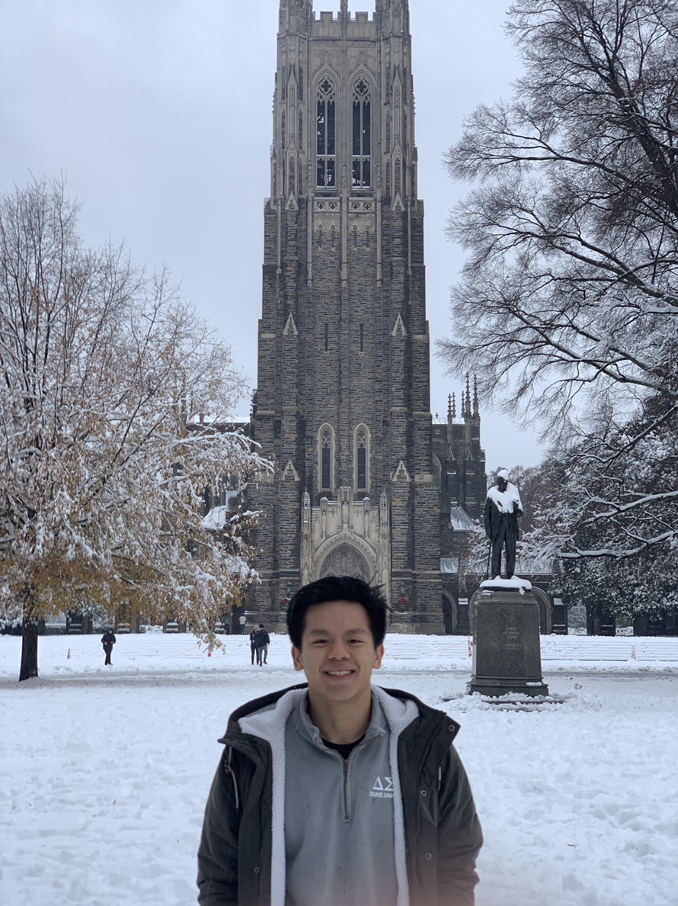
<p></p>
<p3>This winter, my family and I went on a trip to Japan and Taiwan! We visited some really interesting places and also saw Mt. Fuji! Here are some pictures: </p3>
<p></p>
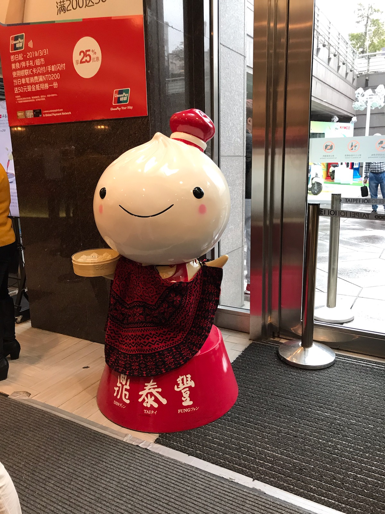        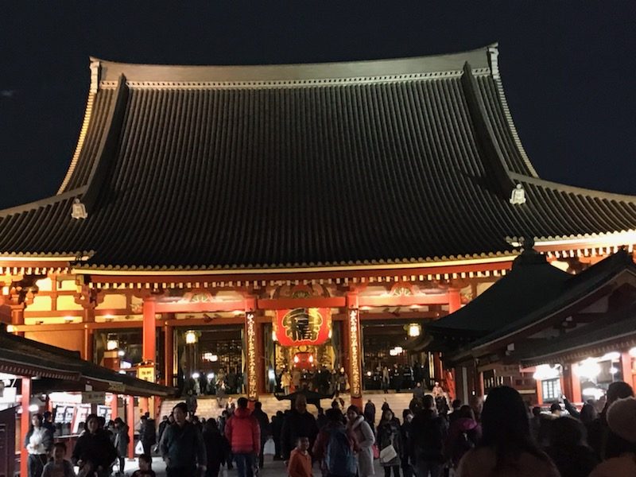             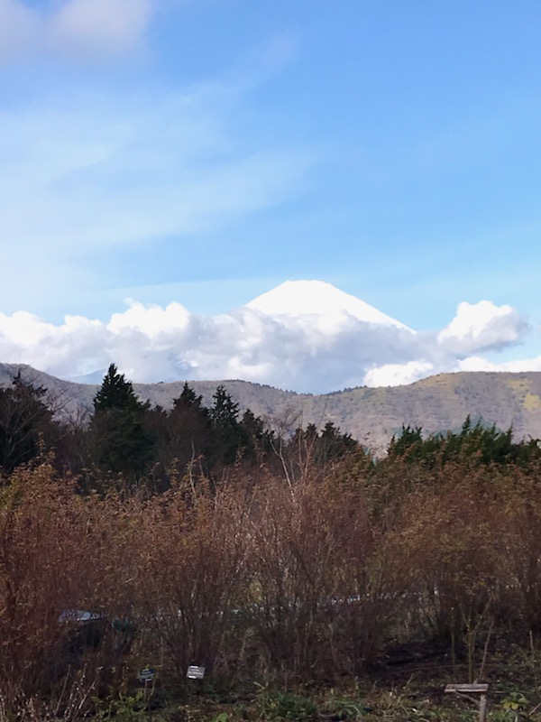          
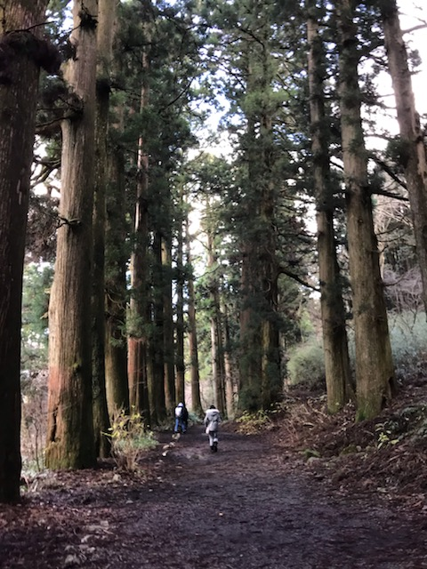
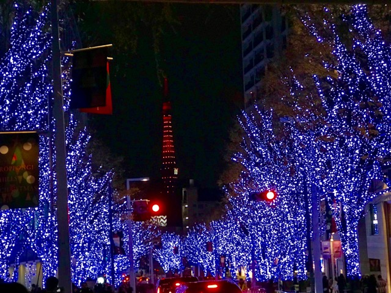
<h2>Interests and Hobbies</h2>
<p4> I play piano, and I also participate in a few school clubs and activities</p4>
<p5>Currently, I'm participating in our school's Leukemia & Lymphoma Student of the year fundraiser! Here's a link if you want more info: https://events.lls.org/sd/SDSOY19/ahuang. </p5>
<p></p>
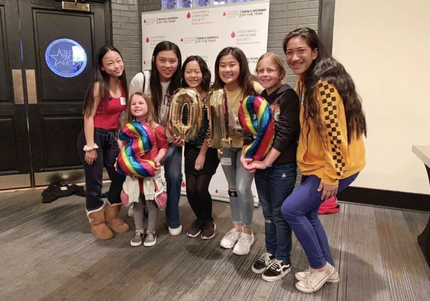
<p></p>
<p5>In my free time I like to read, calligraph, draw, and do some crafts. I also like cats! </p5>
<p></p>
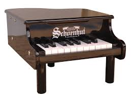 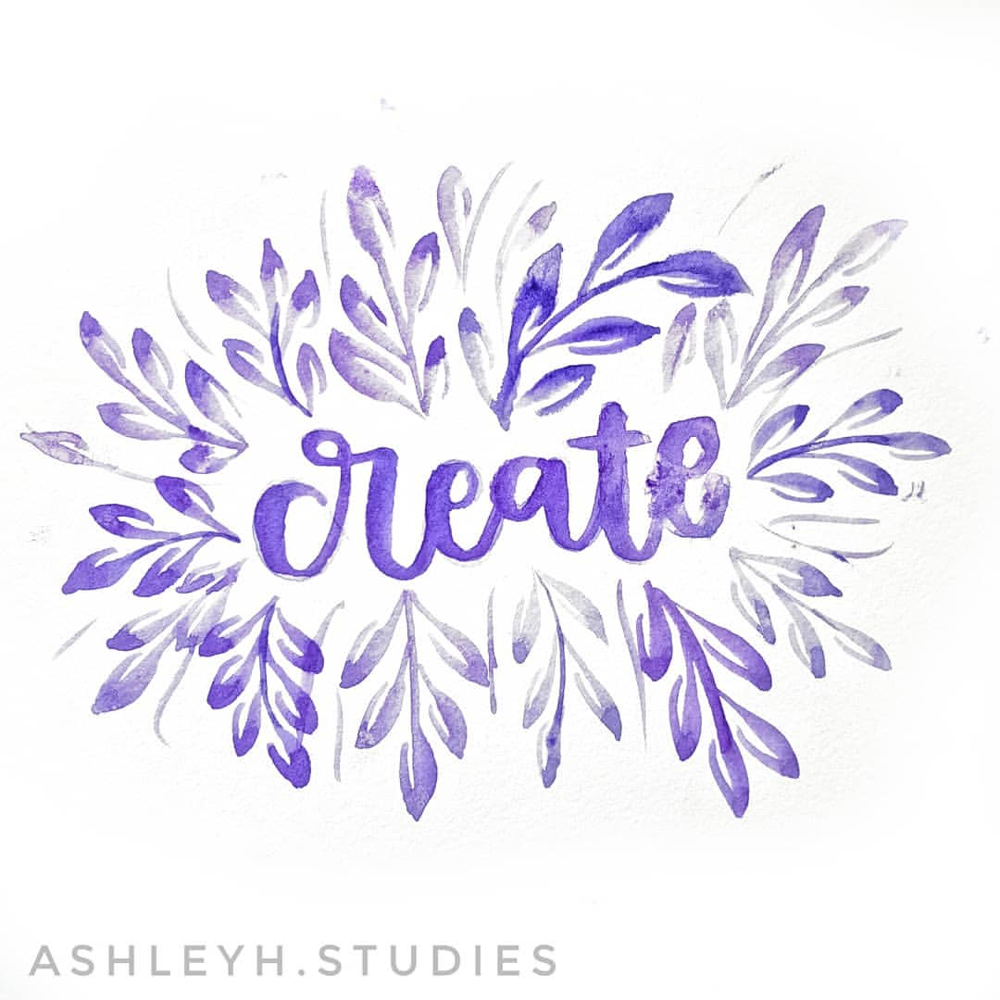   
<p></p>
<p6>Recently, I've also enjoyed making paper cranes</p6>
<p></p>
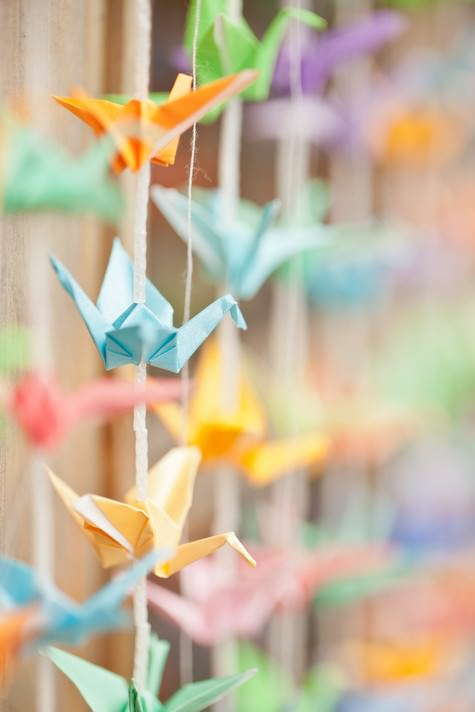 